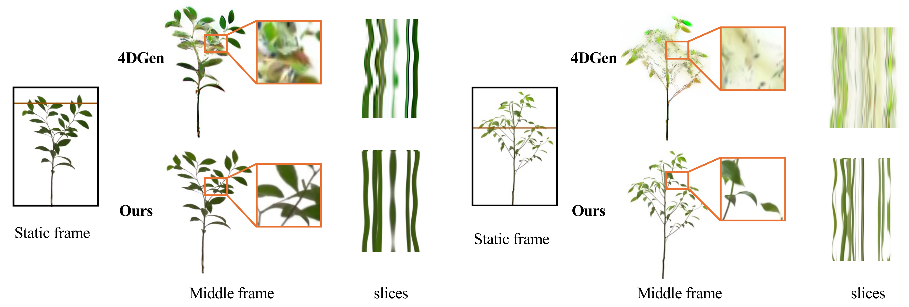
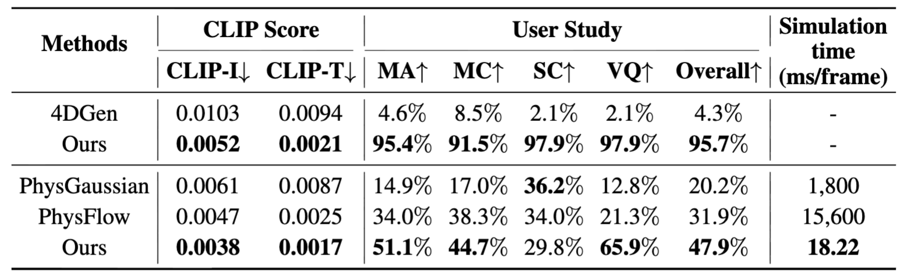

DynamicTree
🌳: Interactive Real Tree Animation
via Sparse Voxel Spectrum

TL;DR: We introduce DynamicTree, a 4D generative framework for long-term realistic animation and dynamic interaction of reconstructed 3DGS trees, which first produces mesh motion through a compact sparse voxel spectrum representation and then deforms surface-bound Gaussian primitives. We further present the first large-scale 4D dynamic tree dataset, containing 8,786 animated tree meshes.
Abstract
Generating dynamic and interactive 3D trees has wide applications in virtual reality, games, and world simulation. However, existing methods still face various challenges in generating structurally consistent and realistic 4D motion for complex real trees. In this paper, we propose DynamicTree, the first framework that can generate long-term, interactive 3D motion for 3DGS reconstructions of real trees. Unlike prior optimization-based methods, our approach generates dynamics in a fast feed-forward manner. The key success of our approach is the use of a compact sparse voxel spectrum to represent the tree movement. Given a 3D tree from Gaussian Splatting reconstruction, our pipeline first generates mesh motion using the sparse voxel spectrum and then binds Gaussians to deform the mesh. Additionally, the proposed sparse voxel spectrum can also serve as a basis for fast modal analysis under external forces, allowing real-time interactive responses. To train our model, we also introduce 4DTree, the first large-scale synthetic 4D tree dataset containing 8,786 animated tree meshes with semantic labels and 100-frame motion sequences. Extensive experiments demonstrate that our method achieves realistic and responsive tree animations, significantly outperforming existing approaches in both visual quality and computational efficiency.
Methodology
Overview of our framework. Our method animates 3DGS trees in two stages: (1) spectrum-based motion generation in the frequency domain, and (2) deformation transfer to 3DGS through mesh binding. In the first stage, we extract the tree mesh from multi-view images, voxelize it, and encode it into a sparse voxel latent condition. A sparse voxel diffusion model then generates a compact motion representation S, which is used to reconstruct mesh motion via devoxelization and inverse Fast Fourier Transform. In the second stage, 3DGS primitives are bound to the mesh surface and animated by its deformations.
Qualitative Results

Comparison with 4D generation methods. We visualize the middle frame of the sequence, where our method better preserves 3D structures. Space-time slices are shown, with vertical and horizontal axes representing time and the spatial profile along the brown line.
Interactive simulation comparison of different methods. We apply a dragging external force and then visualize the response of the scene, where our approach produces more natural oscillatory motion with finer-grained details. t and T denote the middle and final frames, respectively.
Quantitative Results

Quantitative comparison of our method and other methods. The upper part is a comparison of 3D animation, and the lower part is a comparison of interactive simulation.
Citation
If you find this project helpful, please cite us:@article{li2025dynamictree,
title={DynamicTree: Interactive Real Tree Animation via Sparse Voxel Spectrum},
author={Li, Yaokun and Ding, Lihe and Chen, Xiao and Tan, Guang and Xue, Tianfan},
journal={arXiv preprint arXiv:2510.22213},
year={2025}
}